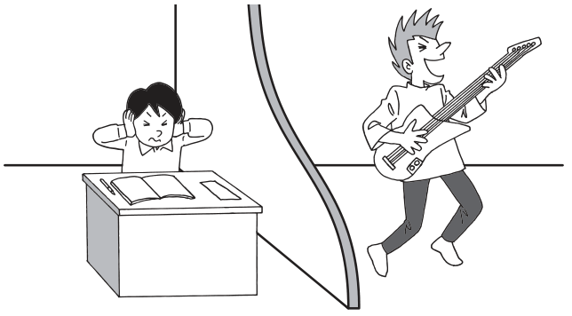

1. 新しい くるまですね。
Text furigana is removed. Original images in this paper retain embedded furigana.
もんだい1 の ことばは どう よみますか。1・2・3・4から いちばん いい ものを ひとつ えらんで ください。
2. 電気を つけて ください。
もんだい2 の ことばは どう かきますか。1・2・3・4から いちばん いい ものを ひとつ えらんで ください。
3. そとで まちましょう。
4. あの ほてるは ゆうめいです。
もんだい3 （ ）に なにを いれますか。1・2・3・4から いちばん いい ものを ひとつ えらんで ください。
5. あそこで タクシーに （ ）。
6. ここは （ ）です。べんきょうできません。

もんだい4 の ぶんと だいたい おなじ いみの ぶんが あります。1・2・3・4から いちばん いい ものを ひとつ えらんで ください。
7. わたしは デパートに つとめて います。
8. ゆうべ パーティーへ いきました。
もんだい1 （ ）に 何を 入れますか。1・2・3・4から いちばん いい ものを 一つ えらんで ください。
（れい） これ （ ） えんぴつです。
（かいとうようし）
| （れい） | ① | ② | ● | ④ |
1. 弟は へや （ ） そうじを しました。
2. きのうは うちに （ ） 何を しましたか。
もんだい2 ★ に 入る ものは どれですか。1・2・3・4から いちばん いい ものを 一つ えらんで ください。
（もんだいれい）
A「_ _ ★ _ か。」
B「山田さんです。」
（こたえかた）
1．ただしい 文をつくります。
| A「 | _ | _ | ★ | _ | か。」 |
| 3 あの人 | 2 は | 4 だれ | 1 です | ||
| B「山田さんです。」 | |||||
2．★に 入る ばんごうを くろく ぬります。
（かいとうようし）
| （れい） | ① | ② | ③ | ● |
3. これは きょねん わたし _ _ ★ _ しゃしんです。
4. きのう、_ _ ★ _。
もんだい3 5から9に 何を 入れますか。1・2・3・4から いちばん いい ものを 一つ えらんで ください。
ジョンさんと ヤンさんは あした じこしょうかいを します。二人は じこしょうかいの ぶんしょうを 書きました。
（1）
はじめまして。ジョン・スミスです。アメリカから［5］。
わたしは えいがが 好きです。アメリカの えいがは よく 知っています。［6］、日本の えいがは あまり 知りません。日本では、日本の えいがを たくさん［7］。
どうぞ よろしく おねがいします。
（2）
みなさん、こんにちは。ヤンです。
わたしは 日本語学校で 毎日 べんきょうしています。今は 学校の ちかくに 姉と 住んで います。姉が いるから、［8］。
わたしは 日本で たくさん 友だちが ほしいです。みなさん、［9］。
どうぞ よろしく おねがいします。
5.
6.
7.
8.
9.
もんだい4 つぎの ぶんを 読んで しつもんに こたえて ください。こたえは 1・2・3・4から いちばん いい ものを 一つ えらんで ください。
先生が アンナさんに 手紙を 書きました。
アンナさん
今週は しごとが たくさん あります。土曜日と 日曜日も いそがしいです。
来週の 月曜日に 来て ください。
10. 先生は いつ 時間が ありますか。
もんだい5 つぎの ぶんを 読んで しつもんに こたえて ください。こたえは 1・2・3・4から いちばん いい ものを 一つ えらんで ください。
ヤンさんの うちは 町の 中の べんりな ところに あります。
となりに パンやがあります。前は はなやで、はなやの となりはさかなやです。近くに くすりやと にくやも あります。ゆうびんきょくと びょういんも あります。
今日の ゆうがた、ヤンさんの 友だちが あそびに 来ます。ヤンさんは とりにくの りょうりと さかなの りょうりを 作ります。れいぞうこの 中に とりにくと さかなが ありませんから、ヤンさんは これから 買いものに でかけます。それから、ゆうびんきょくへ 行って きってを 買います。
11. つぎの 中で、ヤンさんの うちから いちばん 近い 店は どれですか。
12. ヤンさんは 今日 どこへ 行きますか。
もんだい6 つぎの ぶんを 読んで、「電車の 時間」と「バスの 時間」を 見て、しつもんに こたえて ください。こたえは 1・2・3・4から いちばん いい ものを 一つ えらんで ください。
13. 電車は どれに 乗りますか。
あした いちご山へ 行きます。東京駅から 中川駅まで 電車で 行って、中川駅から いちご山まで バスで 行きます。
いちご山に 午前11時 ごろ 着きたいです。
そして、電車は 安いほうが いいです。
| 電車 | 東京駅 → | 中川駅 |
|---|---|---|
| ふじ1 | 8：20 | 10：20 |
| さくら1 | 9：10 | 10：10 |
| ふじ3 | 9：20 | 11：20 |
| さくら3 | 10：10 | 11：10 |
（お金）ふじ：3,000円
さくら：5,000円
バスの 時間
| 中川駅 → | いちご山 |
|---|---|
| 10：30 | 11：00 |
| 11：30 | 12：00 |
（お金）800円
End of available questions